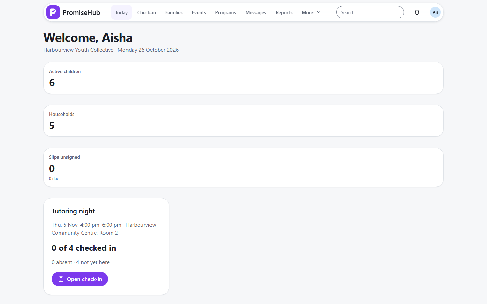
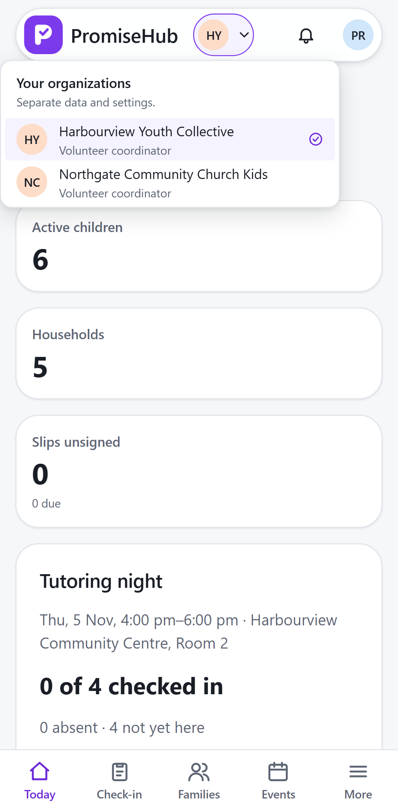

PromiseHub · Video 40
Switch organizations
One person, two organizations, no overlap
One person, two organizations, no overlap
The app reloads for Northgate.


| Case | Answer |
|---|---|
| Someone else's membership | 404 |
| After switching | Only Northgate's families |
| Active membership removed | Falls back to Northgate |
Next: manage billing